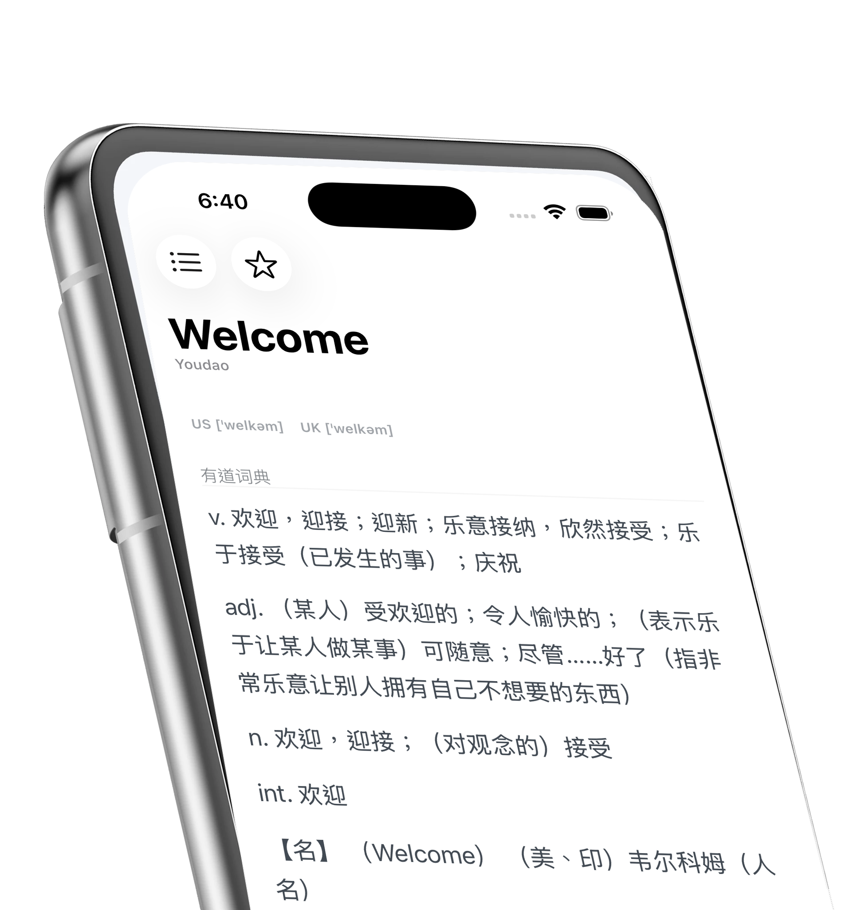

Local-first sessions
aDict 3.0 for iOS and iPadOS
把自己的詞典，放在一次快速查詢裡。
aDict 讓查詞保持貼近閱讀：快速入口、個人的 MDX 文件、StarDict session，以及清楚的本地文件工作流。

Benefits
為那些帶著自己詞典閱讀的人設計。
aDict 把詞典文件、查詞歷史與收藏詞當作長期閱讀資料，而不是臨時 UI 狀態。
查詞不打斷閱讀
快速搜尋、比較 session，再回到原本的閱讀節奏，不讓每一個詞都變成一次上下文切換。
使用自己的 MDX 文件
支援 MDX、MDD 資源與同名 CSS sidecar，可以從本地或 iCloud 文件中使用。
多個 provider，一個結果形狀
Youdao、MDict 與 StarDict 進入同一套 response model，讓閱讀界面保持可預期。
保存的詞要長期有用
查詞歷史、收藏與 enrichment rules 都是 App 系統的一部分，可以服務更長的閱讀工作流。
Product surfaces
來自 aDict 3.0 重寫版本的真實畫面。


Features
一個像閱讀基礎設施一樣工作的詞典 App。
3.0 重寫把 App shell、providers、渲染、文件與持久化拆開，讓查詢流程可以持續改進，同時不破壞個人的詞庫收藏。
閱讀產品筆記Provider packages
Youdao、MDict 與 StarDict 可以獨立演化，但仍輸出同一套查詞 response envelope。
本地文件掃描
從本地與 iCloud folders 發現詞典文件，包含 MDX、MDD、CSS 與 StarDict bundle files。
Intelligence enrichment
可配置的 enrichment 欄位能在詞典結果後追加聚焦內容，生成 cache 則保留在本地。
System
小型查詞工具，變成更清楚的本地詞典系統。
先讓查詞可讀
aDict 起初是一個簡單查詞工具，服務編程、閱讀與日常用詞確認。
使用者自己的詞庫
2.0 加入 MDX 文件、Words、iCloud documents 與 iPad 工作流。
一次性買斷
2.4 移除訂閱，讓低頻但長期存在的詞典工具可靠地留在那裡。
3.0 架構
這次重寫拆開 providers、protocol、WebView rendering、files 與 user data，並準備 public beta 分發。
FAQ
讀者通常會問的問題。
可以使用既有 MDict 文件嗎？
可以。aDict 圍繞個人詞典文件設計，包含 MDX、MDD 資源與 sidecar CSS。
查詞需要帳號嗎？
不需要。一般查詞是本地閱讀工具的體驗，不需要帳號才能使用。
3.0 新在哪裡？
重寫後的 provider 邊界、本地文件掃描、持久化、StoreKit 權益狀態與 enrichment rules 都更清楚。
Public beta